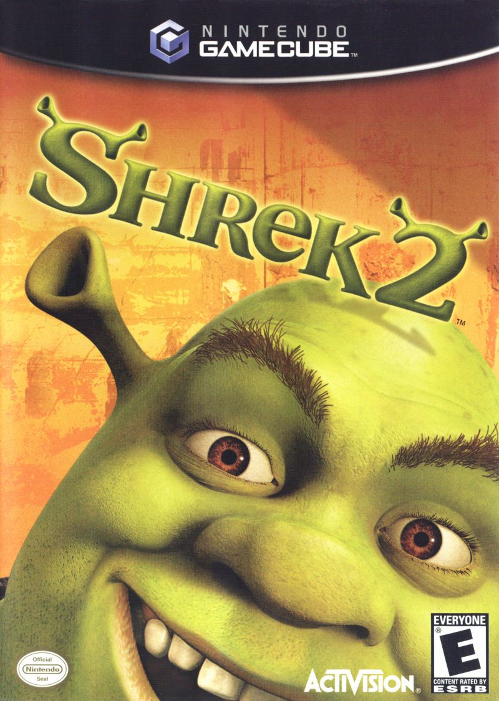

Shrek i Fiona postanawiają odwiedzić rodziców księżniczki, którzy nie wiedzą jednak, że poślubiła ona ogra, a sama zmieniła się w ogrzycę.

Podstawowe informacje o filmie:
| tytuł polski |
Shrek 2 |
| tytuł angielski |
shrek 2 |
| rezyseria |
Andrew Adamson |
| Conrad Vernon |
| Kelly Asbury |
| scenariusz |
Conrad Vernon |
| Andrew Adamson |
| Cody Cameron |
| J. David Stem |
| Walt Dohrn |
| Joe Stillman |
| Chris Miller |
| David P. Smith |
| David N. Weiss |
| linki |
|
Opis
Po powrocie z miesiąca miodowego Shrek i Fiona postanawiają odwiedzić rodziców księżniczki, do których dotarła jedynie wiadomość o ślubie ich córki z prawdziwą miłością jej życia. Młoda para rusza więc do królestwa Zasiedmiogórogrodu. Problem jednak w tym, że rodzice Fiony w ogóle nie zdają sobie sprawy z ciążącej na niej klątwy. W związku z tym są pewni, iż poślubiła ona kogoś z wyższych sfer, kawalera pokroju Lorda Farquaada - władcy rządzącego zasobnym państwem. Jakież więc jest zdziwienie, kiedy ich zięć okazuje się ważącym ponad 300 kilogramów zielonym ogrem nie przywiązującym wagi do higieny, któremu w dodatku towarzyszy gadający osioł.
Role w filmie
| Role w filmie |
|
Shrek
Mike Myers
Osioł
Eddie Murphy
Księżniczka Fiona
Cameron Diaz
Kot w butack
Antonio Banderas
|
Zdjęcia
| Imię |
Edwin |
| Nazwisko |
Piątek |
| Numer |
7 |
| Klasa |
3AG |